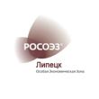

Проекты и отзывы
-

КВАНТ
Акционерное общество «Научно-производственное предприятие «Квант» высоко оценивает проделанную работу «НАСДФР» по вопросам, связанным с государственной регистрацией дополнительного выпуска ценных бумаг АО «НПП «Квант». А так же, отмечает высокую квалификацию, профессионализм, ответственное отношение к делу коллектива ООО «НАСДФР».
АО «НПП «Квант» удовлетворены оказанными услугами по обеспечению государственной регистрации дополнительного выпуска ценных бумаг и рекомендуют нас как профессиональную команду, способную реализовать задачи Заказчика в области консультирования по вопросам коммерческой деятельности и управления на высоком уровне. -

Зираат Банк
Мы оказали профессиональную помощь в организации дополнительного выпуска ценных бумаг «Зираат Банк (Москва)» (акционерное общество).
Нашим заказчиком был отмечен индивидуальный подход в работе с клиентом, тактичность и высокий профессиональный уровень сотрудников Агентства. -

Роскосмос
ФГУП «Организация «Агат» высоко оценивает деятельность ООО «Национальное Агентство по содействию в допуске на финансовый рынок» в том числе в оказании содействия и обеспечении проведения рядом предприятий ракетно- космической промышленности работ в области эмиссии ценных бумаг, корпоративного управления и раскрытия информации.
Это позволило своевременно сформировать интегрированные структуры и обеспечить качественную реализацию системных проектов в области реформирования предприятий космической промышленности, разрабатываемых ФГУП «Организация «Агат». Проведение данных работ было бы невозможно без наличия коллектива профессионалов и единомышленников. -

ОАО «ИСС»
В 2008 г. ОАО «ИСС», а позже и его дочерние общества начали сотрудничество с нами в области оказания услуг по консультированию по вопросам коммерческой деятельности и управления, в частности по государственной регистрации дополнительных выпусков ценных бумаг акционерных обществ.
Мы оказали профессиональную помощь в решении различных вопросов, показав при этом такие качества, как ответственное отношение к делу, стремление вникнуть в поставленную задачу и выполнить ее с максимальной эффективностью.
В своей деятельности наша компания в полной мере придерживается принципов делового сотрудничества и соблюдения взаимных договоренностей, что создает предпосылки для дальнейших взаимодействий между нашими организациями. -
Сибирские приборы и системы
Наше предприятие сотрудничает с ОАО "Сибирские приборы и системы" с 2010 года по вопросам подготовки пакета документов по государственной регистрации дополнительного выпуска ценных бумаг, а также по регистрации отчета по итогам выпуска и мы неоднократно убеждались в высоком качестве услуг предоставляемых сотрудниками данного Общества.
Подтверждение качества услуг выполняемых нами нашло своё отражение в конечном результате нашей совместной работы, ни одного отказа в регистрации дополнительного выпуска акций, начиная с 2010 года, ОАО "Сибирские приборы и системы" не получило, что позволило своевременно выполнить работы связанные с Федеральными программами. -

АО "СХЗ"
Проделали оперативную и квалифицированную работу по оказанию услуг по подготовке документов для государственной регистрации дополнительного выпуска ценных бумаг АО «СХЗ».
В процессе оказания услуг специалисты нашей компании подтвердили свой богатый опыт, компетентность и профессионализм B области государственной регистрации ценных бумаг в соответствии с требованиями «Положения о стандартах эмиссии ценных бумаг, порядке государственной регистрации выпуска (дополнительного выпуска) эмиссионных ценных бумаг, государственной регистрации отчетов об итогах выпуска (дополнительного выпуска) эмиссионных ценных бумаг и регистрации проспектов ценных бумаг», утвержденных Банком России от 11.08.2014 № 428-П. -
АО «АК «Туламашзавод»
АО «АК «Туламашзавод» сотрудничает с ООО «Стратегия Права» (ООО «Национальное агентство по содействию в допуске на финансовый рынок») с 2008 года. За это время Акционерная Компания неоднократно обращалась к специалистам Агентства по различным корпоративным проблемам, в том числе по вопросам выпуска, регистрации и обращения ценных бумаг, правоприменительной практики нормативных документов по рынку ценных бумаг, по вопросам деятельности органов управления акционерного общества.
По всем вопросам АО «АК «Туламашзавод» получала реальную помощь и исчерпывающие консультации в кратчайшие сроки. -
Тезкредит
Оперативная и профессиональная помощь в организации выпусков облигаций.
В сжатые сроки мы смогли разработать действительно эффективные схемы выхода на фондовый рынок, организовали профессиональное сопровождение на каждом этапе взаимодействия с Банком России, ПРД и Московской Биржей. -
Мелодия
Помощь в проведении реорганизации Акционерного общества «Мелодия» путем преобразования из Федерального государственного унитарного предприятия в акционерное общество.
Процесс преобразования, включая соответствующие процедуры такие, как государственная регистрация выпуска ценных бумаг и отчета об итогах выпуска ценных бумаг, были осуществлены профессионально, без нареканий со стороны ГУ Банка России по Центральному федерального округу с соблюдением надлежащих сроков, без каких-либо задержек. -

РОСОЭЗ
Открытое акционерное общество "Особая экономическая зона промышленно- производственного типа "Липецк" благодарит Вас и сотрудников Вашей компании за оперативную и квалифицированную работу по подготовке документов для государственной регистрации дополнительного выпуска ценных бумаг ОАО "ОЭЗ ППТ "Липецк" Ваша компания показала высокий профессионализм, компетентность при подготовке и государственной регистрации документов B соответствии требованиями Положения осстандартах эмиссии ценных бумаг, порядке государственной регистрации выпусков (дополнительных выпусков) эмиссионных ценных бумаг, государственной регистрации отчетов об итогах выпусков (дополнительных выпусков) эмиссионных ценных бумаг и регистрации проспектов ценных бумаг, утвержденного Банком России от 11 августа 2014г. № 428-П. Надеемся на дальнейшее сотрудничество с Вашей компанией и рекомендуем Вас как высокопрофессиональных и надежных партнеров.
-
С-Инструментс
Национальное агентство по содействию в допуске на финансовый рынок реализовало проект высокой сложности, обеспечив регистрацию выпуска ценных бумаг, размещенных по закрытой подписке порядка 20 лет назад. Помимо этого, агентством был реализован проект по конвертации ценных бумаг в акции с большей номинальной стоимостью.
Все процедуры в рамках проектов были подготовлены оперативно, в полном соответствии с законодательством. Процедура регистрации всех выпусков и отчетов прошла без проверок со стороны регистрирующих органов. -
Корпорация по развитию Коми
Национальное агентство по содействию в допуске на финансовый рынок (НАСДФР) обеспечило ряд проектов, связанных с финансовой деятельностью компании. В частности, провело реорганизацию ОАО «Фонд поддержки инвестиционных проектов республики Коми» путем разделения данной компании на три, одной из которых является АО «Корпорация по развитию республики Коми». Другим совместным с НАСДФР проектом стало увеличение уставного капитала нашей компании через размещение по закрытой подписке дополнительных акций.
Мы хотели бы отметить высокую квалификацию и знание регуляторных аспектов финансового рынка экспертами НАСДФР. Все проекты были реализованы в строгом соответствии с российским законодательством и с соблюдением необходимых сроков. Мы намерены продолжить сотрудничество с Вами при реализации проектов в финансовой сфере. -
FAIRDIP Investments
ООО «Фэирдип инвестментс» стала первым на российском рынке эмитентом нового инструмента коммерческих облигаций. Благодаря нашему опыту и профессионализму нам удалось впервые провести регистрацию выпуска нового инструмента в полном соответствии с законодательством, в отведенные сроки и без нареканий со стороны регулятора.
Качественное выполнение такого сложного проекта было отмечено участниками рынка, а также в ведущих российских деловых СМИ: газета «Ведомости» написала статью о первым выпуске, рассказав, что именно наша компания стала первым, кто смог воспользоваться инновационным инструментом. -
PLUTON
Акционерное общество «Электротехническая компания «ПЛУТОН» выражает глубокую благодарность Вам и всем сотрудникам ООО «НАСДФР» за плодотворное сотрудничество в 2015-2017 г.
Благодаря Вашему профессионализму и ответственному подходу ко всем вопросам, удалось благополучно зарегистрировать отчет о дополнительном выпуске ценных бумаг. Все поставленные задачи Вами были выполнены своевременно и качественно.
Особенно хотим отметить Вашу отзывчивость и готовность ответить на любые наши вопросы, подробно разъяснив процедуру дополнительного выпуска ценных бумаг в соответствии с требованиями законодательства РФ. -
ТрансФин-М
Сотрудничество проводилось по целому ряду направлений. В первую очередь, хочется отметить реализацию проекта по регистрации изменений в решения о выпуске ценных бумаг и проспект ценных бумаг (облигаций) в части замены их эмитента, реорганизуемого в форме преобразования, на его правопреемника. Данная процедура проводилась впервые в практике российского финансового рынка. Мы выражаем искреннюю благодарность за то, что столь сложная процедура была проведена надлежащим образом, что позволило достичь максимального результата и избежать возможных рисков. Сотрудничество было организовано в максимально удобном для Общества режиме, что говорит о клиентоориентированности компании.
Помимо этого, данная компания обеспечивала реорганизацию ОАО «ТрансФин-М» путем присоединения к нему ОАО «РусРейлЛизинг». Компания НАСДФР имеет богатый опыт в проведении подобных операций, о чем свидетельствует тот факт, что процесс реорганизации был проведен профессионально с соблюдением всех требований законодательства, а все вопросы решались оперативно и четко.
Кроме того, в ряде первых случаев в России была успешно проведена конвертация облигаций в дополнительные акции Общества с параллельн -
ВМЭС
Помощь в оказании комплекса услуг по сопровождению процедур связанных с созданием (учреждением) Общества на базе имущества должника, признанного банкротом, с государственной регистрацией выпуска и отчета об итогах выпуска ценных бумаг Общества, размещенных путем приобретения единственным учредителем при учреждение акционерного общества, созданного на базе имущества должника, а также с приобретением Обществом публичного статуса.
-
Технодинамика
ООО «НАСДФР» зарекомендовало себя как надежный партнер, способный решать сложные задачи в области рынка ценных бумаг. Высокая квалификация, многолетний опыт и ответственный подход сотрудников Агентства помогли нам решить поставленные задачи в подготовке и регистрации эмиссий акций, приобретения более 30 процентов акций открытого общества, а также в консультировании по вопросам административных правонарушений.